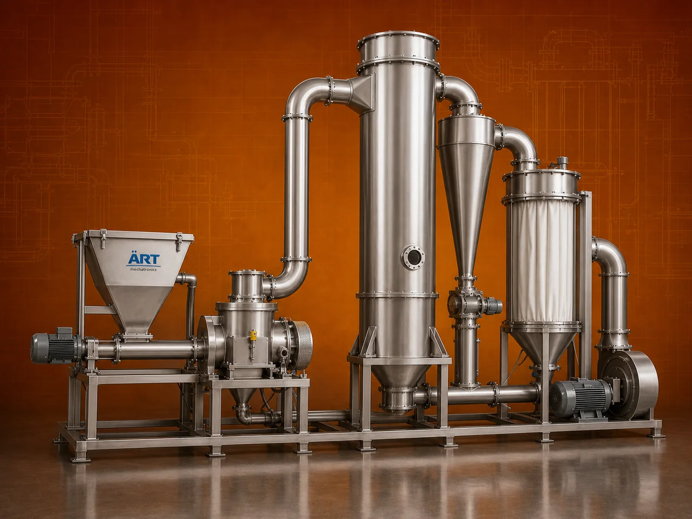

Flash Dryer Machine (Industrial Pneumatic Dryer for Rapid Powder Drying)
A Flash Dryer Machine, also known as a Pneumatic Dryer or Flash Drying System, is a high-speed industrial drying equipment designed for instant drying of powders, fine particles, and moist materials using hot air in a continuous process.

About the Flash Dryer
Flash dryers are widely used in industries such as chemicals, food processing, starch, agro processing, minerals, and waste treatment, where fast moisture removal, uniform drying, and compact system design are required.
In this system, wet material is dispersed into a stream of high-temperature hot air, resulting in rapid evaporation of moisture within seconds, producing dry, free-flowing powder with consistent quality.
ART Mechatronics offers advanced flash dryer machines, engineered for high efficiency, low drying time, and reliable industrial operation.
One machine, many names
Buyers search for this equipment under many terms — we manufacture all of them:
Working Principle of Flash Dryer
Rapid heat transfer occurs
Types of Flash Dryers
Industries Using Flash Dryer
⚗️ Chemical Industry
- Chemicals
- Powders
🍃 Food Processing Industry
- Food powders
🌾 Agro Processing Industry
- Starch
- Agricultural materials
🏗️ Mineral Industry
- Fine minerals
♻️ Waste Processing Industry
- Sludge drying
🌿 Nutraceutical Industry
- Powder products
Features & Advantages
- Instant drying process
- Suitable for fine powders
- High drying efficiency
- Continuous operation
- Compact system design
- Energy-efficient performance
- Uniform product quality
Technical Highlights
- Capacity: Custom (kg/hr to tons/hr)
- Drying Type: Pneumatic hot air drying
- Heating Source: Hot air generator
- Separation System: Cyclone / bag filter
- Construction: Mild Steel / Stainless Steel
- Control System: PLC-based (optional)
Turnkey Flash Drying Solutions
ART Mechatronics offers:
- Complete flash dryer system design
- Integration with hot air generator
- Powder collection systems
- Installation & commissioning
- After-sales service & AMC
Why Choose Art Mechatronics
- Expertise in high-speed drying systems
- Customized solutions for various materials
- High-performance and energy-efficient machines
- Reliable and durable design
- Proven industrial performance
Applications
- Chemical Processing Plants
- Food Processing Units
- Starch Manufacturing Units
- Mineral Processing Plants
- Waste Processing Plants
Related Heating & Drying machines
Get pricing & specs for the Flash Dryer
Share the product, target capacity, current process and plant location. These details help our engineers discuss the right machine or line configuration.
One partner, from design to start-up
ART Mechatronics designs, manufactures, installs and commissions your Flash Dryer solution with regional presence in India, UAE and Thailand.